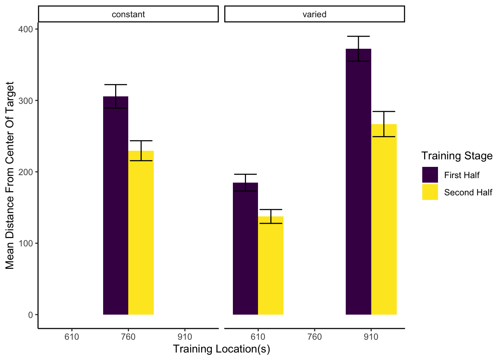
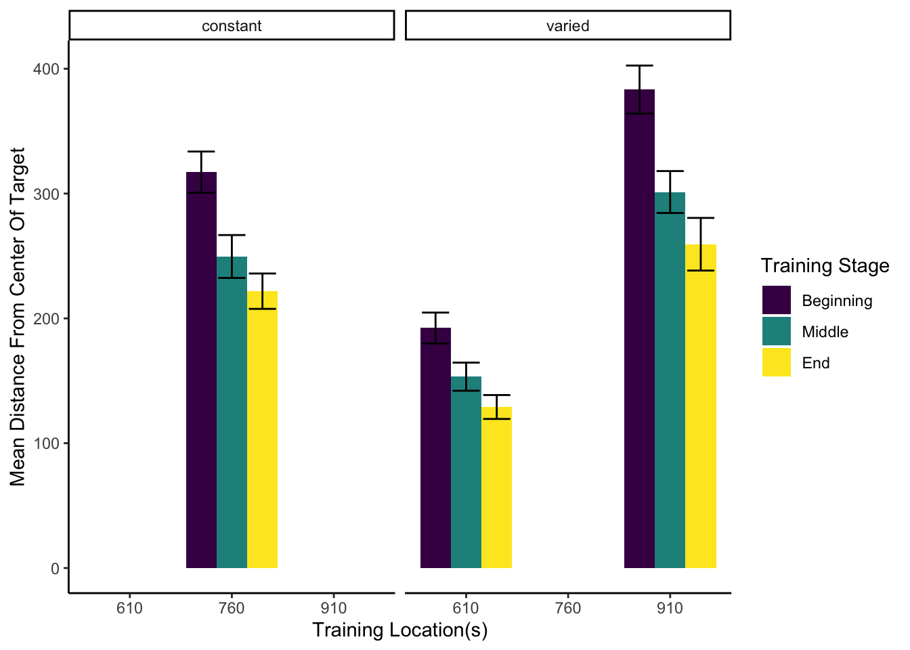

Project 1_IGAS
Abstract
Exposing learners to variability during training has been demonstrated to improve performance in subsequent transfer testing. Such variability benefits are often accounted for by assuming that learners are developing some general task schema or structure. However much of this research has neglected to account for differences in similarity between varied and constant training conditions. In a between-groups manipulation, we trained participants on a simple projectile launching task, with either varied or constant conditions. We replicate previous findings showing a transfer advantage of varied over constant training. Furthermore, we show that a standard similarity model is insufficient to account for the benefits of variation, but, if the model is adjusted to assume that varied learners are tuned towards a broader generalization gradient, then a similarity-based model is sufficient to explain the observed benefits of variation. Our results therefore suggest that some variability benefits can be accommodated within instance-based models without positing the learning of some schemata or structure.
Introduction
The past century of research on human learning has produced ample evidence that although learners can improve at almost any task, such improvements are often specific to the trained task, with unreliable or even nonexistent transfer to novel tasks or conditions (Barnett & Ceci, 2002; Detterman, 1993). Such transfer challenges are of noteworthy practical relevance, given that educators, trainers, and rehabilitators typically intend for their students to be able to apply what they have learned to new situations. It is therefore important to better understand the factors that influence transfer, and to develop cognitive models that can predict when transfer is likely to occur. The factor of interest to the present investigation is variation during training. Our experiments add to the longstanding empirical investigation of the controversial relationship between training variation, and subsequent transfer. We also offer a novel explanation for such results in the form of an instance-based model that accounts for the benefits of variation in simple terms of psychological similarity. We first review the relevant concepts and literature.
1.1 Similarity and instance-based approaches to transfer of learning
Notions of similarity have long played a central role in many prominent models of generalization of learning, as well as in the longstanding theoretical issue of whether learners abstract an aggregate, summary representation, or if they simply store individual instances. Early models of learning often assumed that discrete experiences with some task or category were not stored individually in memory, but instead promoted the formation of a summary representation, often referred to as a prototype or schema, and that exposure to novel examples would then prompt the retrieval of whichever preexisting prototype was most similar (Posner & Keele, 1968). Prototype models were later challenged by the success of instance-based or exemplar models – which were shown to provide an account of generalization as good or better than prototype models, with the advantage of not assuming the explicit construction of an internal prototype (Estes, 1994; Hintzman, 1984; Medin & Schaffer, 1978; Nosofsky, 1986). Instance-based models assume that learners encode each experience with a task as a separate instance/exemplar/trace, and that each encoded trace is in turn compared against novel stimuli. As the number of stored instances increases, so does the likelihood that some previously stored instance will be retrieved to aid in the performance of a novel task. Stored instances are retrieved in the context of novel stimuli or tasks if they are sufficiently similar, thus suggesting that the process of computing similarity is of central importance to generalization.
Similarity, defined in this literature as a function of psychological distance between instances or categories, has provided a successful account of generalization across numerous tasks and domains. In an influential study demonstrating an ordinal similarity effect, experimenters employed a numerosity judgment task in which participants quickly report the number of dots flashed on a screen. Performance (in terms of response times to new patterns) on novel dot configurations varied as an inverse function of their similarity to previously trained dot configurations (Palmeri, 1997). That is, performance was better on novel configurations moderately similar to trained configurations than to configurations with low-similarity, and also better on low-similarity configurations than to even less similar, unrelated configurations. Instance-based approaches have had some success accounting for performance in certain sub-domains of motor learning (Cohen & Rosenbaum, 2004; Crump & Logan, 2010; Meigh et al., 2018; Poldrack et al., 1999; Wifall et al., 2017) . Crump and Logan (2010) trained participants to type words on an unfamiliar keyboard, while constraining the letters composing the training words to a pre-specified letter set. Following training, typing speed was tested on previously experienced words composed of previously experienced letters; novel words composed of letters from the trained letter set; and novel words composed of letters from an untrained letter set. Consistent with an instance-based account, transfer performance was graded such that participants were fastest at typing the words they had previously trained on, followed by novel words composed of letters they had trained on, and slowest performance for new words composed of untrained letters.
1.2 The effect of training variability on transfer
While similarity-based models account for transfer by the degree of similarity between previous and new experiences, a largely separate body of research has focused on improving transfer by manipulating characteristics of the initial training stage. Such characteristics have included training difficulty, spacing, temporal order, feedback schedules, and the primary focus of the current work – variability of training examples.
Research on the effects of varied training typically compares participants trained under constant, or minimal variability conditions to those trained from a variety of examples or conditions (Czyż, 2021; Soderstrom & Bjork, 2015). Varied training has been shown to influence learning in myriad domains including categorization of simple stimuli (Hahn et al., 2005; Maddox & Filoteo, 2011; Posner & Keele, 1968), complex categorization (Nosofsky et al., 2018), language learning (Jones & Brandt, 2020; Perry et al., 2010; Twomey et al., 2018; Wonnacott et al., 2012) anagram completion (Goode et al., 2008), trajectory extrapolation (Fulvio et al., 2014), task switching (Sabah et al., 2019), associative learning (Lee et al., 2019), visual search (George & Egner, 2021; Gonzalez & Madhavan, 2011; Kelley & Yantis, 2009), voice identity learning (Lavan et al., 2019), simple motor learning (Braun et al., 2009; Kerr & Booth, 1978; Roller et al., 2001; Willey & Liu, 2018), sports training (Green et al., 1995; North et al., 2019), and training on a complex video game (Seow et al., 2019).
Training variation has received a particularly large amount of attention within the domain of visuomotor skill learning. Much of this research has been influenced by the work of Schmidt (1975), who proposed a schema-based account of motor learning as an attempt to address the longstanding problem of how novel movements are produced. According to Schema Theory, learners possess general motor programs for classes of movements (e.g. throwing a ball with an underhand movement), as well as schema rules that determine how a motor program is parameterized or scaled for a particular movement. Schema theory predicts that varied training results in the formation of a more general schema-rule, which can allow for transfer to novel movements within a given movement class. Experiments that test this hypothesis are often designed to compare the transfer performance of a constant-trained group against that of a varied-trained group. Both groups train on the same task, but the varied group practices from multiple levels of a task-relevant dimension that remains invariant for the constant group. For example, investigators might train two groups of participants to throw a projectile at a target, with a constant group that throws from a single location, and a varied group that throws from multiple locations. Both groups are then tested from novel locations. Empirically observed benefits of the varied-trained group are then attributed to the variation they received during training, a finding observed in numerous studies (Catalano & Kleiner, 1984; Chua et al., 2019; Goodwin et al., 1998; Kerr & Booth, 1978; Wulf, 1991), and the benefits of this variation are typically thought to be mediated by the development of a more general schema for the throwing motion.
Of course, the relationship between training variability and transfer is unlikely to be a simple function wherein increased variation is always beneficial. Numerous studies have found null, or in some cases negative effects of training variation (DeLosh et al., 1997; Sinkeviciute et al., 2019; Wrisberg et al., 1987), and many more have suggested that the benefits of variability may depend on additional factors such as prior task experience, the order of training trials, or the type of transfer being measured (Berniker et al., 2014; Braithwaite & Goldstone, 2015; Hahn et al., 2005; Lavan et al., 2019; North et al., 2019; Sadakata & McQueen, 2014; Zaman et al., 2021).
Issues with Previous Research
Although the benefits of training variation in visuomotor skill learning have been observed many times, null findings have also been repeatedly found, leading some researchers to question the veracity of the variability of practice hypothesis (Newell, 2003; Van Rossum, 1990). Critics have also pointed out that investigations of the effects of training variability, of the sort described above, often fail to control for the effect of similarity between training and testing conditions. For training tasks in which participants have numerous degrees of freedom (e.g. projectile throwing tasks where participants control the x and y velocity of the projectile), varied groups are likely to experience a wider range of the task space over the course of their training (e.g. more unique combinations of x and y velocities). Experimenters may attempt to account for this possibility by ensuring that the training location(s) of the varied and constant groups are an equal distance away from the eventual transfer locations, such that their training throws are, on average, equally similar to throws that would lead to good performance at the transfer locations. However, even this level of experimental control may still be insufficient to rule out the effect of similarity on transfer. Given that psychological similarity is typically best described as either a Gaussian or exponentially decaying function of psychological distance (Ennis et al., 1988; Ghahramani et al., 1996; Logan, 1988; Nosofsky, 1992; Shepard, 1987; Thoroughman & Taylor, 2005), it is plausible that a subset of the most similar training instances could have a disproportionate impact on generalization to transfer conditions, even if the average distance between training and transfer conditions is identical between groups. Figure 1 demonstrates the consequences of a generalization gradient that drops off as a Gaussian function of distance from training, as compared to a linear drop-off.

In addition to largely overlooking the potential for non-linear generalization to confound interpretations of training manipulations, the visuomotor skill learning literature also rarely considers alternatives to schema representations (Chamberlin & Magill, 1992). Although schema-theory remains influential within certain literatures, instance or exemplar-based models have accounted for human behavior across myriad domains (Jamieson et al., 2022; Logan, 2002). As mentioned above, instance based accounts have been shown to perform well on a variety of different tasks with motoric components (Crump & Logan, 2010; Gandolfo et al., 1996; Meigh et al., 2018; Rosenbaum et al., 1995; van Dam & Ernst, 2015). However, such accounts have received little attention within the subdomain of visuomotor skill learning focused on the benefits of varied training.
The present work examines whether the commonly observed benefits of varied training can be accounted for by between-group differences in similarity between training and testing throws. We first attempt to replicate previous work finding an advantage of varied training over constant training in a projectile launching task. We then examine the extent to which this advantage can be explained by an instance-based similarity model.
Experiment 1
Methods
Sample Size Estimation
To obtain an independent estimate of effect size, we identified previous investigations which included between-subjects contrasts of varied and constant conditions following training on an accuracy based projectile launching task (Chua et al., 2019; Goodwin et al., 1998; Kerr & Booth, 1978; Wulf, 1991). We then averaged effects across these studies, yielding a Cohens f =.43. The GPower 3.1 software package (Faul et al., 2009) was then used to determine that a power of 80% requires a sample size of at least 23 participants per condition. All experiments reported in the present manuscript exceed this minimum number of participants per condition.
Participants
Participants were recruited from an undergraduate population that is 63% female and consists almost entirely of individuals aged 18-22 years. A total of 110 Indiana University psychology students participated in Experiment 1. We subsequently excluded 34 participants poor performance at one of the dependent measures of the task (2.5-3 standard deviations worse than the median subject at the task) or for displaying a pattern of responses that was clearly indicative of a lack of engagement with the task (e.g. simply dropping the ball on each trial rather than throwing it at the target), or for reporting that they completed the experiment on a phone or tablet device, despite the instructions not to use one of these devices. A total of 74 participants were retained for the final analyses, 35 in the varied group and 39 in the constant group.
Task
The experimental task was programmed in JavaScript, using packages from the Phaser physics engine (https://phaser.io) and the jsPsych library (de Leeuw, 2015). The stimuli, presented on a black background, consisted of a circular blue ball – controlled by the participant via the mouse or trackpad cursor; a rectangular green target; a red rectangular barrier located between the ball and the target; and an orange square within which the participant could control the ball before releasing it in a throw towards the target. Because the task was administered online, the absolute distance between stimuli could vary depending on the size of the computer monitor being used, but the relative distance between the stimuli was held constant. Likewise, the distance between the center of the target, and the training and testing locations was scaled such that relative distances were preserved regardless of screen size. For the sake of brevity, subsequent mentions of this relative distance between stimuli, or the position where the ball landed in relation to the center of the target, will be referred to simply as distance. Methods Figure 2 displays the layout of the task, as it would appear to a participant at the start of a trial, with the ball appearing in the center of the orange square. Using a mouse or trackpad, participants click down on the ball to take control of the ball, connecting the movement of the ball to the movement of the cursor. Participants can then “wind up” the ball by dragging it (within the confines of the orange square) and then launch the ball by releasing the cursor. If the ball does not land on the target, participants are presented with feedback in red text at the top right of the screen, on how many units away they were from the center of the target. If the ball was thrown outside of the boundary of the screen participants are given feedback as to how far away from the target center the ball would have been if it had continued its trajectory. If the ball strikes the barrier (from the side or by landing on top), feedback is presented telling participants to avoid hitting the barrier. If participants drag the ball outside of the orange square before releasing it, the trial terminates, and they are reminded to release the ball within the orange square. If the ball lands on the target, feedback is presented in green text, confirming that the target was hit, and presenting additional feedback on how many units away the ball was from the exact center of the target.
Link to abbrevaited example of task.

Results
2.2.1 Data Processing and Statistical Packages. To prepare the data, we first removed trials that were not easily interpretable as performance indicators in our task. Removed trials included: 1) those in which participants dragged the ball outside of the orange starting box without releasing it, 2) trials in which participants clicked on the ball, and then immediately released it, causing the ball to drop straight down, 3) outlier trials in which the ball was thrown more than 2.5 standard deviations further than the average throw (calculated separately for each throwing position), and 4) trials in which the ball struck the barrier. The primary measure of performance used in all analyses was the absolute distance away from the center of the target. The absolute distance was calculated on every trial, and then averaged within each subject to yield a single performance score, for each position. A consistent pattern across training and testing phases in both experiments was for participants to perform worse from throwing positions further away from the target – a pattern which we refer to as the difficulty of the positions. However, there were no interactions between throwing position and training conditions, allowing us to collapse across positions in cases where contrasts for specific positions were not of interest. All data processing and statistical analyses were performed in R version 4.03 (R Core Team, 2020). ANOVAs for group comparisons were performed using the rstatix package (Kassambara, 2021).
2.2.2 Training Phase. Figure 3 below shows aggregate training performance binned into three stages representing the beginning, middle, and end of the training phase. Because the two conditions trained from target distances that were not equally difficult, it was not possible to directly compare performance between conditions in the training phase. Our focus for the training data analysis was instead to establish that participants did improve their performance over the course of training, and to examine whether there was any interaction between training stage and condition. Descriptive statistics for the intermittent testing phase are provided in the supplementary materials.
We performed an ANOVA comparison with stage as a within-group factor and condition as between-group factor. The analysis revealed a significant effect of training stage F(2,142)=62.4, p<.001, η2G = .17, such that performance improved over the course of training There was no significant effect of condition F(1,71)=1.42, p=.24, η2G = .02, and no significant interaction between condition and training stage, F(2,142)=.10, p=.91, η2G < .01.

2.2.3 Testing Phase. In Experiment 1, a single constant-trained group was compared against a single varied-trained group. At the transfer phase, all participants were tested from 3 positions: 1) the positions(s) from their own training, 2) the training position(s) of the other group, and 3) a position novel to both groups. Overall, group performance was compared with a mixed type III ANOVA, with condition (varied vs. constant) as a between-subject factor and throwing location as a within-subject variable. The effect of throwing position was strong, F(3,213) = 56.12, p<.001, η2G = .23. The effect of training condition was significant F(1,71)=8.19, p<.01, η2G = .07. There was no significant interaction between group and position, F(3,213)=1.81, p=.15, η2G = .01.
Discussion
In Experiment 1, we found that varied training resulted in superior testing performance than constant training, from both a position novel to both groups, and from the position at which the constant group was trained, which was novel to the varied condition. The superiority of varied training over constant training even at the constant training position is of particular note, given that testing at this position should have been highly similar for participants in the constant condition. It should also be noted, though, that testing at the constant trained position is not exactly identical to training from that position, given that the context of testing is different in several ways from that of training, such as the testing trials from the different positions being intermixed, as well as a simple change in context as a function of time. Such contextual differences will be further considered in the General Discussion.
In addition to the variation of throwing position during training, the participants in the varied condition of Experiment 1 also received training practice from the closest/easiest position, as well as from the furthest/most difficult position that would later be encountered by all participants during testing. The varied condition also had the potential advantage of interpolating both of the novel positions from which they would later be tested. Experiment 2 thus sought to address these issues by comparing a varied condition to multiple constant conditions.
Experiment 2
In Experiment 2, we sought to replicate our findings from Experiment 1 with a new sample of participants, while also addressing the possibility of the pattern of results in Experiment 1 being explained by some idiosyncrasy of the particular training location of the constant group relative to the varied group. To this end, Experiment 2 employed the same basic procedure as Experiment 1, but was designed with six separate constant groups each trained from one of six different locations (400, 500, 625, 675, 800, or 900), and a varied group trained from two locations (500 and 800). Participants in all seven groups were then tested from each of the 6 unique positions.
Methods
Participants. A total of 306 Indiana University psychology students participated in Experiment 2, which was also conducted online. As was the case in experiment 1, the undergraduate population from which we recruited participants was 63% female and primarily composed of 18–22-year-old individuals. Using the same procedure as experiment 1, we excluded 98 participants for exceptionally poor performance at one of the dependent measures of the task, or for displaying a pattern of responses indicative of a lack of engagement with the task. A total of 208 participants were included in the final analyses with 31 in the varied group and 32, 28, 37, 25, 29, 26 participants in the constant groups training from location 400, 500, 625, 675, 800, and 900, respectively. All participants were compensated with course credit.
Task and Procedure. The task of Experiment 2 was identical to that of Experiment 1, in all but some minor adjustments to the height of the barrier, and the relative distance between the barrier and the target. Additionally, the intermittent testing trials featured in experiment 1 were not utilized in experiment 2, and all training and testing trials were presented with feedback. An abbreviated demo of the task used for Experiment 2 can be found at (https://pcl.sitehost.iu.edu/tg/demos/igas_expt2_demo.html).
The procedure for Experiment 2 was also quite similar to experiment 1. Participants completed 140 training trials, all of which were from the same position for the constant groups and split evenly (70 trials each - randomized) for the varied group. In the testing phase, participants completed 30 trials from each of the six locations that had been used separately across each of the constant groups during training. Thus resulting in one previously experienced location and five novel throwing locations for each of the constant groups, and two previously experienced locations, and four novel locations for the varied group.
Results
3.2.1 Data Processing and Statistical Packages. After confirming that condition and throwing position did not have any significant interactions, we standardized performance within each position, and then average across position to yield a single performance measure per participant. This standardization did not influence our pattern of results. As in experiment 1, we performed type III ANOVA’s due to our unbalanced design, however the pattern of results presented below is not altered if type 1 or type III tests are used instead. The statistical software for the primary analyses was the same as for experiment 1. Individual learning rates in the testing phase, compared between groups in the supplementary analyses, were fit using the TEfit package in R (Cochrane, 2020).
3.2.2 Training Phase. The different training conditions trained from positions that were not equivalently difficult and are thus not easily amenable to comparison. As previously stated, the primary interest of the training data is confirmation that some learning did occur. Figure 5 depicts the training performance of the varied group alongside that of the aggregate of the six constant groups (5a), and each of the 6 separate constant groups (5b). An ANOVA comparison with training stage (beginning, middle, end) as a within-group factor and group (the varied condition vs. the 6 constant conditions collapsed together) as a between-subject factor revealed no significant effect of group on training performance, F(1,206)=.55,p=.49, η2G <.01, a significant effect of training stage F(2,412)=77.91, p<.001, η2G =.05, and no significant interaction between group and training stage, F(2,412)=.489 p=.61, η2G <.01. We also tested for a difference in training performance between the varied group and the two constant groups that trained matching throwing positions (i.e., the constant groups training from position 500, and position 800). The results of our ANOVA on this limited dataset mirrors that of the full-group analysis, with no significant effect of group F(1,86)=.48, p=.49, η2G <.01, a significant effect of training stage F(2,172)=56.29, p<.001, η2G =.11, and no significant interaction between group and training stage, F(2,172)=.341 p=.71, η2G <.01.
Discussion
The results of experiment 2 largely conform to the findings of experiment 1. Participants in both varied and constant conditions improved at the task during the training phase. We did not observe the common finding of training under varied conditions producing worse performance during acquisition than training under constant conditions (Catalano & Kleiner, 1984; Wrisberg et al., 1987), which has been suggested to relate to the subsequent benefits of varied training in retention and generalization testing (Soderstrom & Bjork, 2015). However our finding of no difference in training performance between constant and varied groups has been observed in previous work (Chua et al., 2019; Moxley, 1979; Pigott & Shapiro, 1984).
In the testing phase, our varied group significantly outperformed the constant conditions in both a general comparison, and in an analysis limited to novel throwing positions. The observed benefit of varied over constant training echoes the findings of many previous visuomotor skill learning studies that have continued to emerge since the introduction of Schmidt’s influential Schema Theory (Catalano & Kleiner, 1984; Chua et al., 2019; Goodwin et al., 1998; McCracken & Stelmach, 1977; Moxley, 1979; Newell & Shapiro, 1976; Pigott & Shapiro, 1984; Roller et al., 2001; Schmidt, 1975; Willey & Liu, 2018; Wrisberg et al., 1987; Wulf, 1991). We also join a much smaller set of research to observe this pattern in a computerized task (Seow et al., 2019). One departure from the experiment 1 findings concerns the pattern wherein the varied group outperformed the constant group even from the training position of the constant group, which was significant in experiment 1, but did not reach significance in experiment 2. Although this pattern has been observed elsewhere in the literature (Goode et al., 2008; Kerr & Booth, 1978), the overall evidence for this effect appears to be far weaker than for the more general benefit of varied training in conditions novel to all training groups.
Computational Model
Controlling for the similarity between training and testing The primary goal of Experiment 2 was to examine whether the benefits of variability would persist after accounting for individual differences in the similarity between trained and tested throwing locations. To this end, we modelled each throw as a two-dimensional point in the space of x and y velocities applied to the projectile at the moment of release. For each participant, we took each individual training throw, and computed the similarity between that throw and the entire population of throws within the solution space for each of the 6 testing positions. We defined the solution space empirically as the set of all combinations of x and y throw velocities that resulted in hitting the target. We then summed each of the trial-level similarities to produce a single similarity for each testing position score relating how the participant threw the ball during training and the solutions that would result in target hits from each of the six testing positions – thus resulting in six separate similarity scores for each participant. Figure 8a visualizes the solution space for each location and illustrates how different combinations of x and y velocity result in successfully striking the target from different launching positions. As illustrated in Figure 8b, the solution throws represent just a small fraction of the entire space of velocity combinations used by participants throughout the experiment.
For each individual trial, the Euclidean distance (Equation 2) was computed between the velocity components (x and y) of that trial and the velocity components of each individual solution throw for each of the 6 positions from which participants would be tested in the final phase of the study. The P parameter in equation 2 is set equal to 2, reflecting a Gaussian similarity gradient. Then, as per an instance-based model of similarity (Logan, 2002; Nosofsky, 1992), these distances were multiplied by a sensitivity parameter, c, and then exponentiated to yield a similarity value. The parameter c controls the rate with which similarity-based generalization drops off as the Euclidean distance between two throws in x- and y-velocity space increases. If c has a large value, then even a small difference between two throws’ velocities greatly decreases the extent of generalization from one to the other. A small value for c produces broad generalization from one throw to another despite relatively large differences in their velocities. The similarity values for each training individual throw made by a given participant were then summed to yield a final similarity score, with a separate score computed for each of the 6 testing positions. The final similarity score is construable as index of how accurate the throws a participant made during the training phase would be for each of the testing positions.
Equation 1 Equation 2
A simple linear regression revealed that these similarity scores were significantly predictive of performance in the transfer stage, t =-15.88, p<.01, r^2=.17, such that greater similarity between training throws and solution spaces for each of the test locations resulted in better performance. We then repeated the group comparisons above while including similarity as a covariate in the model. Comparing the varied and constant groups in testing performance from all testing positions yielded a significant effect of similarity, F(1, 205)=85.66, p<.001, η2G =.29, and also a significant effect of condition (varied vs. constant), F(1, 205)=6.03, p=.015, η2G =.03. The group comparison limited to only novel locations for the varied group pit against trained location for the constant group resulted in a significant effect of similarity, F(1,148)=31.12, p<.001, η2G =.18 as well as for condition F(1,148)=11.55, p<.001, η2G =.07. For all comparisons, the pattern of results was consistent with the initial findings from experiment 2, with the varied group still performing significantly better than the constant group.
Fitting model parameters separately by group To directly control for similarity in Experiment 2, we developed a model-based measure of the similarity between training throws and testing conditions. This similarity measure was a significant predictor of testing performance, e.g., participants whose training throws were more similar to throws that resulted in target hits from the testing positions, tended to perform better during the testing phase. Importantly, the similarity measure did not explain away the group-level benefits of varied training, which remained significant in our linear model predicting testing performance after similarity was added to the model. However, previous research has suggested that participants may differ in their level of generalization as a function of prior experience, and that such differences in generalization gradients can be captured by fitting the generalization parameter of an instance-based model separately to each group (Hahn et al., 2005; Lamberts, 1994). Relatedly, the influential Bayesian generalization model developed by Tenenbaum & Griffiths (2001) predicts that the breadth of generalization will increase when a rational agent encounters a wider variety of examples. Following these leads, we assume that in addition to learning the task itself, participants are also adjusting how generalizable their experience should be. Varied versus constant participants may be expected to learn to generalize their experience to different degrees. To accommodate this difference, the generalization parameter of the instance-based model (in the present case, the c parameter) can be allowed to vary between the two groups to reflect the tendency of learners to adaptively tune the extent of their generalization. One specific hypothesis is that people adaptively set a value of c to fit the variability of their training experience (Nosofsky & Johansen, 2000; Sakamoto et al., 2006). If one’s training experience is relatively variable, as with the variable training condition, then one might infer that future test situations will also be variable, in which case a low value of c will allow better generalization because generalization will drop off slowly with training-to-testing distance. Conversely, if one’s training experience has little variability, as found in the constant training conditions, then one might adopt a high value of c so that generalization falls off rapidly away from the trained positions.
To address this possibility, we compared the original instance-based model of similarity fit against a modified model which separately fits the generalization parameter, c, to varied and constant participants. To perform this parameter fitting, we used the optim function in R, and fit the model to find the c value(s) that maximized the correlation between similarity and testing performance.
Both models generate distinct similarity values between training and testing locations. Much like the analyses in Experiment 2, these similarity values are regressed against testing performance in models of the form shown below. As was the case previously, testing performance is defined as the mean absolute distance from the center of the target (with a separate score for each participant, from each position).
Linear model 1: TestingPerformance ~ βPosition + γSimilarity1c Linear model 2: TestingPerformance ~ βPosition + γSimilarity1c + δ*trainingGroup
Linear model 3: TestingPerformance ~ βPosition + γSimilarity2c Linear model 4: TestingPerformance ~ βPosition + γSimilarity2c + δ*trainingGroup
Linear models 1 and 3 both show that similarity is a significant predictor of testing performance (p<.01). Of greater interest is the difference between linear model 2, in which similarity is computed from a single c value fit from all participants (Similarity1c), with linear model 4, which fits the c parameter separately between groups (Similarity2c). In linear model 2, the effect of training group remains significant when controlling for Similarity1c (p<.01), with the varied group still performing significantly better. However, in linear model 4 the addition of the Similarity2c predictor results in the effect of training group becoming nonsignificant (p=.40), suggesting that the effect of varied vs. constant training is accounted for by the Similarity2c predictor. Next, to further establish a difference between the models, we performed nested model comparisons using ANOVA, to see if the addition of the training group parameter led to a significant improvement in model performance. In the first comparison, ANOVA(Linear Model 1, Linear Model 2), the addition of the training group predictor significantly improved the performance of the model (F=22.07, p<.01). However, in the second model comparison, ANOVA (Linear model 3, Linear Model 4) found no improvement in model performance with the addition of the training group predictor (F=1.61, p=.20).
Finally, we sought to confirm that similarity values generated from the adjusted Similarity2c model had more predictive power than those generated from the original Similarity1c model. Using the BIC function in R, we compared BIC values between linear model 1 (BIC=14604.00) and linear model 3 (BIC = 14587.64). The lower BIC value of model 3 suggests a modest advantage for predicting performance using a similarity measure computed with two c values over similarity computed with a single c value. When fit with separate c values, the best fitting c parameters for the model consistently optimized such that the c value for the varied group (c=.00008) was smaller in magnitude than the c value for the constant group(c= .00011). Recall that similarity decreases as a Gaussian function of distance (equation 1 above), and a smaller value of c will result in a more gradual drop-off in similarity as the distance between training throws and testing solutions increases.
In summary, our modeling suggests that an instance-based model which assumes equivalent generalization gradients between constant and varied trained participants is unable to account for the extent of benefits of varied over constant training observed at testing. The evidence for this in the comparative model fits is that when a varied/constant dummy-coded variable for condition is explicitly added to the model, the variable adds a significant contribution to the prediction of test performance, with the variable condition yielding better performance than the constant conditions. However, if the instance-based generalization model is modified to assume that the training groups can differ in the steepness of their generalization gradient, by incorporating a separate generalization parameter for each group, then the instance-based model can account for our experimental results without explicitly taking training group into account. Henceforth this model will be referred to as the Instance-based Generalization with Adaptive Similarity (IGAS) model.
General Discussion
Across two experiments, we found evidence in support of the benefits of variability hypothesis in a simple, computerized projectile throwing task. Generalization was observed in both constant and varied participants, in that both groups tended to perform better at novel positions in the testing phase than did participants who started with those positions in the training phase. However, varied trained participants consistently performed better than constant trained participants, in terms of both the testing phase in general, and in a comparison that only included untrained positions. We also found some evidence for the less commonly observed pattern wherein varied-trained participants outperform constant-trained participants even from conditions identical to the constant group training (Goode et al., 2008; Green et al., 1995; Kerr & Booth, 1978). In experiment 1 varied participants performed significantly better on this identity comparison. In Experiment 2, the comparison was not significant initially, but became significant after controlling for the similarity measure that incorporates only a single value for the steepness of similarity-based generalization (c). Furthermore, we showed that the general pattern of results from Experiment 2 could be parsimoniously accommodated by an instance-based similarity model, but only with the assumption that constant and varied participants generalize their training experience to different degrees. Our results thus suggest that the benefits of variation cannot be explained by the varied-trained participants simply covering a broader range of the task space. Rather, the modeling suggests that varied participants also learn to adaptively tune their generalization function such that throwing locations generalize more broadly to one another than they do in the constant condition. A learning system could end up adopting a higher c value in the constant than variable training conditions by monitoring the trial-by-trial variability of the training items. The c parameter would be adapted downwards when adjacent training items are dissimilar to each other and adapted upwards when adjacent training items are the same. In this fashion, contextually appropriate c values could be empirically learned. This learning procedure would capture the insight that if a situation has a high amount variability, then the learner should be predisposed toward thinking that subsequent test items will also show considerable variability, in which case generalization gradients should be broad, as is achieved by low values for c.
Also of interest is whether the IGAS model can predict the pattern of results wherein the varied condition outperforms the constant condition even from the position on which the constant condition trained. Although our models were fit using all of the Experiment 2 training and testing data, not just that of the identity comparisons, in Figure 9 we demonstrate how a simplified version of the IGAS model could in principle produce such a pattern. In addition to the assumption of differential generalization between varied and constant conditions, our simplified model makes explicit an assumption that is incorporated into the full IGAS model – namely that even when being tested from a position identical to that which was trained, there are always some psychological contextual differences between training and testing throws, resulting in a non-zero dissimilarity. Attempt with caption in ggdraw

![Figure 9. A simple model depicting the necessity of both of two separately fit generalization parameters, c, and a positive distance between #| training and testing contexts, in order for an instance model to predict a pattern of varied training from stimuli 400 and 800 outperforming constant #| training from position 600 at a test position of 600. For the top left panel, in which the generalization model assumes a single c value (-.008) for #| both varied and constant conditions, and identical contexts across training and testing, the equation which generates the varied condition is: Amount #|of Generalization = e^(c∙abs(x-800)) +e^(c∙abs(x-400)), whereas the constant group generalization is generated from 2* e^(c*abs(x-600)). For the top #|right panel, the c constants in the original equations are different for the 2 conditions, with c=-.002 for the varied condition, and c=-.008 for the #|constant condition. The bottom two panels are generated from identical equations to those immediately above, except for the addition of extra distance #|(100 units) to reflect the assumption of some change in context between training and testing conditions. Thus, the generalization model for the varied #|condition in the bottom-right panel is of the form: Amount of Generalization $e^{-c\cdot(X-800)^2}+e^{-c\cdot(X-400)^2}$.](igas_n_files/figure-html/Toy%20Model%202-1.png)
Figure 9. A simple model depicting the necessity of both of two separately fit generalization parameters, c, and a positive distance between #| training and testing contexts, in order for an instance model to predict a pattern of varied training from stimuli 400 and 800 outperforming constant #| training from position 600 at a test position of 600. For the top left panel, in which the generalization model assumes a single c value (-.008) for #| both varied and constant conditions, and identical contexts across training and testing, the equation which generates the varied condition is: Amount #|of Generalization = e^(c∙abs(x-800)) +e^(c∙abs(x-400)), whereas the constant group generalization is generated from 2* e^(c*abs(x-600)). For the top #|right panel, the c constants in the original equations are different for the 2 conditions, with c=-.002 for the varied condition, and c=-.008 for the #|constant condition. The bottom two panels are generated from identical equations to those immediately above, except for the addition of extra distance #|(100 units) to reflect the assumption of some change in context between training and testing conditions. Thus, the generalization model for the varied #|condition in the bottom-right panel is of the form: Amount of Generalization \(e^{-c\cdot(X-800)^2}+e^{-c\cdot(X-400)^2}\).
Attempt with text-reference caption definition.
(ref:my-figure-caption) Figure 9. A simple model depicting the necessity of both of two separately fit generalization parameters, c, and a positive distance between training and testing contexts, in order for an instance model to predict a pattern of varied training from stimuli 400 and 800 outperforming constant training from position 600 at a test position of 600. For the top left panel, in which the generalization model assumes a single c value (-.008) for #| both varied and constant conditions, and identical contexts across training and testing, the equation which generates the varied condition is: Amount #|of Generalization = \(e^(c∙abs(x-800)) +e^(c∙abs(x-400))\), whereas the constant group generalization is generated from \(2* e^(c*abs(x-600))\). For the top #|right panel, the c constants in the original equations are different for the 2 conditions, with c=-.002 for the varied condition, and c=-.008 for the #|constant condition. The bottom two panels are generated from identical equations to those immediately above, except for the addition of extra distance #|(100 units) to reflect the assumption of some change in context between training and testing conditions. Thus, the generalization model for the varied condition in the bottom-right panel is of the form: Amount of Generalization \(e^{-c\\cdot(X-800)^2}+e^{-c\\cdot(X-400)^2}\).

(ref:my-figure-caption)
As mentioned above, the idea that learners flexibly adjust their generalization gradient based on prior experience does have precedent in the domains of category learning (Aha & Goldstone, 1992; Briscoe & Feldman, 2011; Hahn et al., 2005; Lamberts, 1994; Op de Beeck et al., 2008), and sensorimotor adaptation (Marongelli & Thoroughman, 2013; Taylor & Ivry, 2013; Thoroughman & Taylor, 2005). Lamberts (1994) showed that a simple manipulation of background knowledge during a categorization test resulted in participants generalizing their training experience more or less broadly, and moreover that such a pattern could be captured by allowing the generalization parameter of an instance-based similarity model to be fit separately between conditions. The flexible generalization parameter has also successfully accounted for generalization behavior in cases where participants have been trained on categories that differ in their relative variability (Hahn et al., 2005; Sakamoto et al., 2006). However, to the best of our knowledge, IGAS is the first instance-based similarity model that has been put forward to account for the effect of varied training in a visuomotor skill task. Although IGAS was inspired by work in the domain of category learning, its success in a distinct domain may not be surprising in light of the numerous prior observations that at least certain aspects of learning and generalization may operate under common principles across different tasks and domains. (Censor et al., 2012; Cox et al., 2018; Hills et al., 2010; Jamieson et al., 2022; Law & Gold, 2010; Roark et al., 2021; Rosenbaum et al., 2001; Vigo et al., 2018; Wall et al., 2021; Wu et al., 2020; Yang et al., 2020).
Our modelling approach does differ from category learning implementations of instance-based models in several ways. One such difference is the nature of the training instances that are assumed to be stored. In category learning studies, instances are represented as points in a multidimensional space of all of the attributes that define a category item (e.g. size/color/shape). Rather than defining instances in terms of what stimuli learners experience, our approach assumes that stored, motor instances reflect how they act, in terms of the velocity applied to the ball on each throw. An advantage of many motor learning tasks is the relative ease with which task execution variables can be directly measured (e.g. movement force, velocity, angle, posture) in addition to the decision and response time measures that typically exhaust the data generated from more classical cognitive tasks. Of course, whether learners actually are storing each individual motor instance is a fundamental question beyond the scope of the current work – though as described in the introduction there is some evidence in support of this idea (Chamberlin & Magill, 1992; Crump & Logan, 2010; Hommel, 1998; Meigh et al., 2018; Poldrack et al., 1999). A particularly noteworthy instance-based model of sensory-motor behavior is the Knowledge II model of Rosenbaum and colleagues (Cohen & Rosenbaum, 2004; Rosenbaum et al., 1995). Knowledge II explicitly defines instances as postures (joint combinations), and is thus far more detailed than IGAS in regards to the contents of stored instances. Knowledge II also differs from IGAS in that learning is accounted for by both the retrieval of stored postures, and the generation of novel postures via the modification of retrieved postures. A promising avenue for future research would be to combine the adaptive similarity mechanism of IGAS with the novel instance generation mechanisms of Knowledge II.
Our findings also have some conceptual overlap with an earlier study on the effects of varied training in a coincident timing task (Catalano & Kleiner, 1984). In this task, participants observe a series of lamps lighting up consecutively, and attempt to time a button press with the onset of the final lamp. The design consisted of four separate constant groups, each training from a single lighting velocity, and a single varied group training with all four of the lighting velocities used by the individual constant groups. Participants were then split into four separate testing conditions, each of which were tested from a single novel lighting velocity of varying distance from the training conditions. The result of primary interest was that all participants performed worse as the distance between training and testing velocity increased – a typical generalization decrement. However, varied participants showed less of a decrement than did constant participants. The authors take this result as evidence that varied training results in a less-steep generalization gradient than does constant training. Although the experimental conclusions of Catalano and Kleiner are similar to our own, our work is novel in that we account for our results with a cognitive model, and without assuming the formation of a schema. Additionally, the way in which Catalano and Kleiner collapse their separate constant groups together may result in similarity confounds between varied and constant conditions that leaves their study open to methodological criticisms, especially in light of related work which demonstrated that the extent to which varied training may be beneficial can depend on whether the constant group they are compared against trained from similar conditions to those later tested (Wrisberg et al., 1987). Our study alleviates such concerns by explicitly controlling for similarity.
5.1 Limitations A limitation of this study concerns the ordering of the testing/transfer trials at the conclusion of both experiments. Participants were tested from each separate position (4 in Experiment 1, 6 in Experiment 2) in a random, intermixed order. Because the varied group was trained from two positions that were also randomly ordered, they may have benefited from experience with this type of sequencing, whereas the constant groups had no experience with switching between positions trial to trial. This concern is somewhat ameliorated by the fact that the testing phase performance of the constant groups from their trained position was not significantly worse than their level of performance at the end of the training phase, suggesting that they were not harmed by random ordering of positions during testing. It should also be noted that the computerized task utilized in the present work is relatively simple compared to many of the real-world tasks utilized in prior research. It is thus conceivable that the effect of variability in more complex tasks is distinct from the process put forward in the present work. An important challenge for future work will be to assess the extent to which IGAS can account for generalization in relatively complex tasks with far more degrees of freedom.
It is common for psychological process models of categorization learning to use an approach such as multidimensional scaling so as to transform the stimuli from the physical dimensions used in the particular task into the psychological dimensions more reflective of the actual human representations (Nosofsky, 1992; Shepard, 1987). Such scaling typically entails having participants rate the similarity between individual items and using these similarity judgements to then compute the psychological distances between stimuli, which can then be fed into a subsequent model. In the present investigation, there was no such way to scale the x and y velocity components in terms of the psychological similarity, and thus our modelling does rely on the assumption that the psychological distances between the different throwing positions are proportional to absolute distances in the metric space of the task (e.g. the relative distance between positions 400 and 500 is equivalent to that between 800 and 900). However, an advantage of our approach is that we are measuring similarity in terms of how participants behave (applying a velocity to the ball), rather than the metric features of the task stimuli.
Conclusion Our experiments demonstrate a reliable benefit of varied training in a simple projectile launching task. Such results were accounted for by an instance-based model that assumes that varied training results in the computation of a broader similarity-based generalization gradient. Instance-based models augmented with this assumption may be a valuable approach towards better understanding skill generalization and transfer.